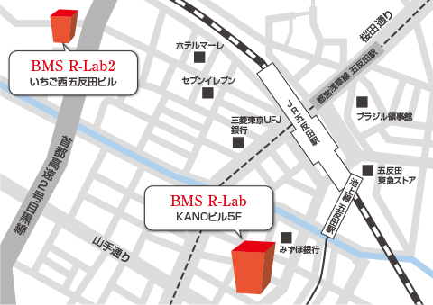

Yoga Ed.プロフェッショナル・インスティテュート1 /Pi 1 基礎:幼児から小学生への指導法Yoga Ed.
ファミリーヨガに参加して親子で充実した時間を過ごしませんか？好奇心と想像力を持ってヨガで楽しみましょう
子どもへヨガを効果的に教えるために必要な基本原則とツールを学びます。
Yoga Ed.のカリキュラムは教育機関向けにデザインされていますが、ヨガスタジオ、ご家庭、医療機関を含む多様な環境でも容易に取り入れることができます。ここでは、子どもの身体的、精神的、感情的健康を促進するためのヨガテクニックを学びます。主眼は、子どもの発達、解剖学、生理学、そして学習領域への理解を通して、子どもの様子を理解することや子どもとの関わり方を学ぶことです。この変革的なトレーニングで、学校、家庭、または地域でのヨガクラスなど、子どものニーズに応える効果的なヨガクラスを作ることができるようになるでしょう。
申込専用ページ（別サイトが開きます）・メール・お電話にてお申込みいただけます。

03-6409-6504
【平日】9:00〜19:00
※メール・お電話でのお申込み後、こちらよりお振込のご案内をいたします。

土曜の午後はファミリーヨガで親子の絆を深めましょう！
ヨガは子供の発育に多くの恩恵をもたらしてくれます。
ヨガは体を動かす身体的な面だけでなく、精神面 感情面 学習面 社会的な面でも大きく子どもたちをサポートします。
好奇心を持ってヨガを楽しみながら、運動能力を広げ、身体感覚を探求し、
自分の健康を管理する能力として呼吸やヨガのポーズを学びます。
パートナーポーズ、ゲームでは相手を思いやる気持ちを育みながら、コミュニケーション能力を身につけていきます。
リラクゼーションでは心身の安らぎを親子で感じましょう。
YogaEdのキッズヨガは子どもの心と身体の発達、成長に合わせたヨガを安全に行います。
是非、ご家族でファミリーヨガの楽しさを体験してみてください！
メール・お電話にてお申込みいただけます。
03-6409-6504
【平日】9:00〜19:00
※メール・お電話でのお申込み後、こちらよりお振込のご案内をいたします。